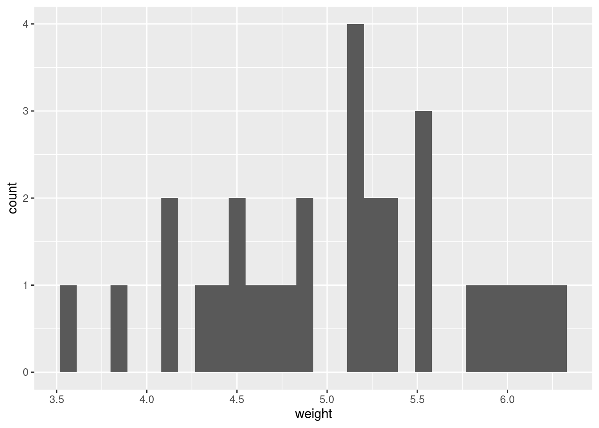
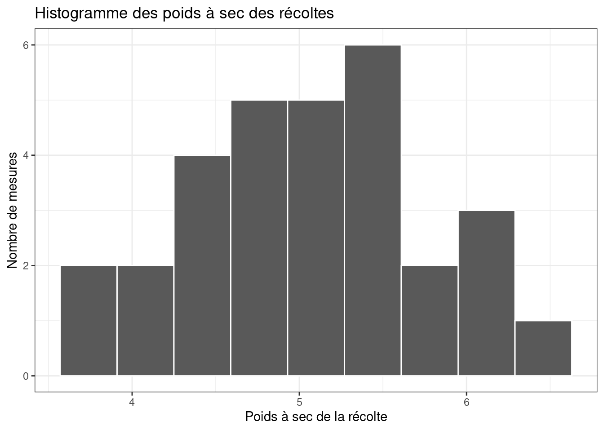
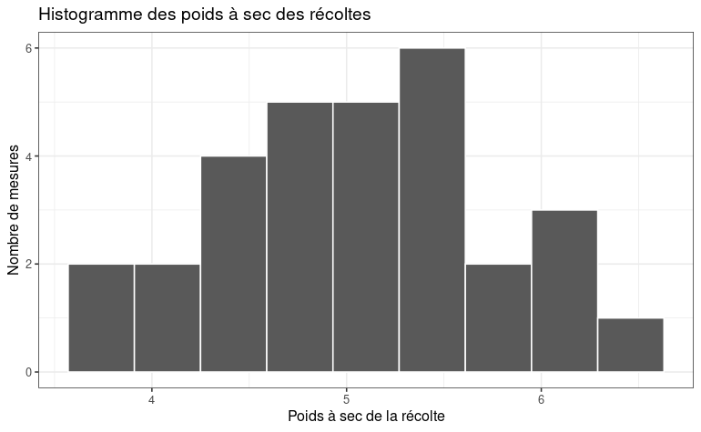
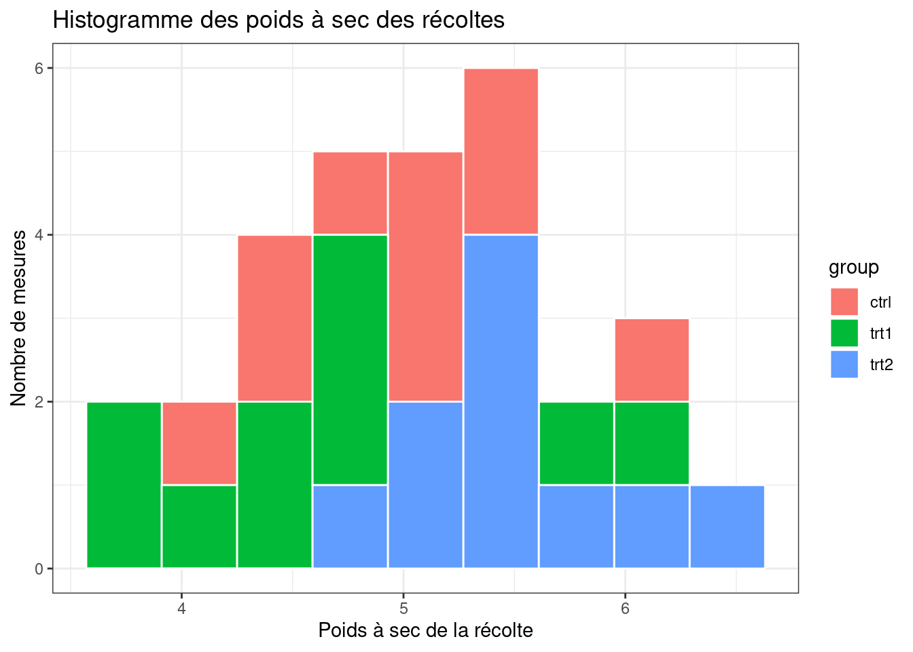
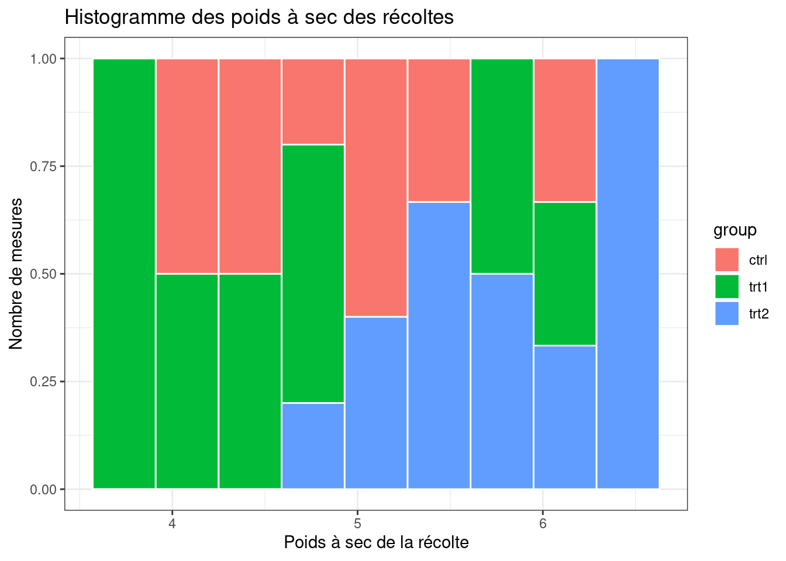
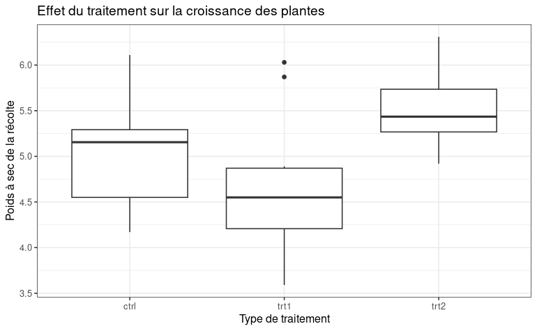

# Téléchargement de la librairie ggplot2
install.packages("ggplot2")Installation du package dans '/home/bdu/R/x86_64-pc-linux-gnu-library/4.4'
(car 'lib' n'est pas spécifié)Nous y verrons :
Comment charger et utiliser la librairie de visualisation ggplot2 ?
Comment réaliser et personnaliser des visualisations avec ggplot2 ?
Comment utiliser une visualisation pour illustrer un phénomène ?
Dans ce module, vous apprendrez également à utiliser un type particulier de données dans R : les facteurs
La communauté R a développé plusieurs miliers de librairies qui servent a démultiplier les possibilité du langage R (et à ne pas réinventer la roue).
L’une des librairires les plus utilisées est la librairie ggplot2 qui sert a visualiser des données. Elle est particulièrement utilisée dans les publications scientifiques car hautement personnalisable.
1-Pour utiliser la librairie, il faut d’abord la télécharger sur le serveur du CRAN :
# Téléchargement de la librairie ggplot2
install.packages("ggplot2")Installation du package dans '/home/bdu/R/x86_64-pc-linux-gnu-library/4.4'
(car 'lib' n'est pas spécifié)2-Une fois la librairie installée, il faut la charger dans l’environnement de développement :
# Chargement de la librairie ggplot2 dans l'environnement de développement
library(ggplot2)Vérifiez que le package ggplot2 est bien chargé au moyen de la commande search()
# Ecrivez votre code ici :ggplot2 propose un grand nombre de visualisations classiques : histogrammes, scatterplots, boites à moustache, etc. Les visualisations dans ggplot2 commencent par le préfixe “geom_”.
Pour voir la liste de toutes les visualisations proposées par ggplot2, on peut utiliser la fonction apropos() qui cherche une chaîne de caractère dans l’aide de R
# Recherche de toutes les visualisations geom_ du package ggplot2
apropos("geom_") [1] "geom_abline" "geom_area" "geom_bar"
[4] "geom_bin_2d" "geom_bin2d" "geom_blank"
[7] "geom_boxplot" "geom_col" "geom_contour"
[10] "geom_contour_filled" "geom_count" "geom_crossbar"
[13] "geom_curve" "geom_density" "geom_density_2d"
[16] "geom_density_2d_filled" "geom_density2d" "geom_density2d_filled"
[19] "geom_dotplot" "geom_errorbar" "geom_errorbarh"
[22] "geom_freqpoly" "geom_function" "geom_hex"
[25] "geom_histogram" "geom_hline" "geom_jitter"
[28] "geom_label" "geom_line" "geom_linerange"
[31] "geom_map" "geom_path" "geom_point"
[34] "geom_pointrange" "geom_polygon" "geom_qq"
[37] "geom_qq_line" "geom_quantile" "geom_raster"
[40] "geom_rect" "geom_ribbon" "geom_rug"
[43] "geom_segment" "geom_sf" "geom_sf_label"
[46] "geom_sf_text" "geom_smooth" "geom_spoke"
[49] "geom_step" "geom_text" "geom_tile"
[52] "geom_violin" "geom_vline" "update_geom_defaults" Il est ensuite possible de demander des précisions sur chaque visualisation en utilisant l’aide de R :
# Accès à l'aide pour la visualisation diagramme en bar de ggplot2
help(geom_bar)
# ou alternativement
?geom_barTrouvez la fonction de ggplot permettant de creer un scatter plot (ensemble de points définis par leur coordonnées en absisse et en ordonnée). Affichez son aide.
# Ecrivez votre code ici :Nous allons maintenant construire nos premières visualisations avec ggplot2.
Pour cela, nous utiliserons le dataset PlantGrowth. Ce dataset vise à étudier l’influence d’un traitement (non communiqué) sur la croissance d’une plante. Pour cela, on mesure le poids total de la récolte selon que l’on a appliqué le traitement 1 ou le traitement 2 (ou pas de traitement).
# Afficher les premières lignes du fichier "PlantGrowth"
head(PlantGrowth, n=20) weight group
1 4.17 ctrl
2 5.58 ctrl
3 5.18 ctrl
4 6.11 ctrl
5 4.50 ctrl
6 4.61 ctrl
7 5.17 ctrl
8 4.53 ctrl
9 5.33 ctrl
10 5.14 ctrl
11 4.81 trt1
12 4.17 trt1
13 4.41 trt1
14 3.59 trt1
15 5.87 trt1
16 3.83 trt1
17 6.03 trt1
18 4.89 trt1
19 4.32 trt1
20 4.69 trt1Dans R, les données sont typées. On distingue par exemple les trois principaux types suivants :
les nombres réels (le plus fréquent) : double ou dbl
les chaînes de caractère : character ou chr
les facteurs : factor ou fctr
“Quatre” est par exemple considéré par R comme une chaîne de caractère et non comme un nombre.
La notion de facteur correspond dans R à une variable de ventilation, c’est à dire une variable qui scinde le dataset en plusieurs groupes distincts, chaque ligne appartenant à un groupe donné. Il sera très utile par exemple dans la fonction “group_by” que nous verrons plus loin.
Par exemple dans le dataset PlantGrowth, la variable group est un facteur
# Pour vérifier qu'une variable est de type facteur, on utilise la commande is.factor()
is.factor(PlantGrowth$group)[1] TRUEIl est souvent utile de connaître toutes les valeurs possibles d’un facteur. En langage statistique, cela revient à lister l’ensemble des modalités d’une variable. Lorsque la variable est de type facteur, on utilise la fonction levels.
# Affichage de l'ensemble des valeurs possibles de la variable group du dataset PlantGrowth
levels(PlantGrowth$group)[1] "ctrl" "trt1" "trt2"Reprenez le dataset iris. Trouvez quelle variable du dataset est un facteur. Faites la liste de ses modalités.
# Ecrivez votre code ici :La variable groupe du dataset PlantGrowth contient trois modalités :
ctrl, le groupe contrôle, sans traitement
trt1 : le groupe ayant reçu le traitement 1
trt2 : le groupe ayant reçu le traitement 2
Dans un premier temps, nous allons nous interesser à la variable weight du dataset PlantGrowth. Un histogramme va nous permettre de voir comment le poids des récoltes est répartie : en terme statistiques, on parle de la distribution des valeurs de la variable.
La librairie ggplot2 contient une visualisation en histogramme avec la fonction geom_histogram(). Elle fonctionne en couches que l’on ajoute progressivement avec le symbôle +
# Visualisation en histogramme de la variable weigh du dataset PantGrowth
ggplot(PlantGrowth) + # la première couche définit le jeu de données à utiliser
geom_histogram(aes(weight)) # la deuxième couche définit la visualisation et la variable sur laquelle l'appliquer
On modifie ensuite le graphique toujours sur le principe de couches successives
# Visualisation en histogramme de la variable weigh du dataset PantGrowth
ggplot(PlantGrowth) +
geom_histogram(aes(weight),
color = "white", # on ajoute un contour blanc
bins = 9) + # on ajuste le nombre d'intervalles (bins)
theme_bw() + # on ajoute un habillage "black and white"
ggtitle("Histogramme des poids à sec des récoltes") + # on ajoute un titre
labs(x = "Poids à sec de la récolte",y = "Nombre de mesures") # on ajoute des etiquettes
Reprenez le dataset iris. Faites un histogramme de la variable Petal.Length. Personnalisez le thème, le titre et les étiquettes à votre convenance.
# Ecrivez votre code ici :Le diagramme ci-dessous permet-il de savoir si le traitement influence la croissance des plantes ?

Pour y voir plus clair sur ce sujet, nous allons utiliser une fonctionnalité spécifique de la librairie ggplot : la notion d’esthétique (aesthetic) contrôler par la fonction aes().
L’esthétique peut être déclarée au tout début ou dans la couche ou elle est pertinente. Attention, chaque nouvelle déclaration écrase la précédente.
La fonction d’esthétique permet d’asservir les paramètres du graphique (son esthétique) à certaines variables. En clair cela signifie que le paramètre esthétique choisit variera en fonction de la valeur de ce qu’il représente.
La couleur de remplissage sert souvent de paramètre esthétique pour représenter différents groupes, ou plus spécifiquement dans R : un facteur. Dans ggplot, le paramètre esthétique correspondant à la couleur de remplissage se nomme “fill”.
On peut donc associer une couleur de remplissage au facteur de notre choix. Ici nous choisirons le facteur “group” qui correspond au traitement donné à la plante
# Utilisation de l'ésthétique "fill" pour représenter le facteur "Traitement"
ggplot(PlantGrowth) +
geom_histogram(aes(x = weight, fill = group), # le parametre fill est ajouté dans la fonction aes()
color = "white",
bins = 9) +
theme_bw() +
ggtitle("Histogramme des poids à sec des récoltes") +
labs(x = "Poids à sec de la récolte", y = "Nombre de mesures") 
Question : peut-on discerner une influence du traitement sur la croissance de la plante ?
En fonction de ce que vous cherchez à montrer, vous aurez probablement a ajuster certain parametres secondaires. Ces parametres secondaires sont mentionnés dans l’aide de la fonction. Cela dit, il est parfois plus simple de poser la question dans un moteur de recherche.
Dans le cas nous allons nous interesser à la position des barres de l’histogramme les unes par rapport aux autres. Cette position est controlée par le paramètre “position” qui est par défaut égale à “stack”.
# Ajustement de la position des barres pour renforcer la lisibilité du graphe
ggplot(PlantGrowth) +
geom_histogram(aes(x = weight, fill = group),
color = "white",
bins = 9,
position = "fill") + # parametre contrôlant la position des barres de l'histogramme
theme_bw() +
ggtitle("Histogramme des poids à sec des récoltes") +
labs(x = "Poids à sec de la récolte", y = "Nombre de mesures") 
A l’aide de l’aide et/ou d’internet, trouvez les quatre valeurs possibles pour le parametre position. Sélectionnez celui qui vous parait le plus approprié pour illustrer l’effet du traitement sur la croissance de la plante.
# Modifiez le code ci-dessous :
ggplot(PlantGrowth) +
geom_histogram(aes(x = weight, fill = group),
color = "white",
bins = 9,
position = "stack") + # parametre contrôlant la position des barres de l'histogramme
theme_bw() +
ggtitle("Histogramme des poids à sec des récoltes") +
labs(x = "Poids à sec de la récolte", y = "Nombre de mesures") Dans ce module, nous avons vu comment utiliser la librairie graphique ggplot2 pour créer des visualisations avec R.
Nous avons découvert au passage la notion de facteur
Nous avons compris la logique de programmation en couches successives utilisée par ggplot
Nous avons vu comment personnaliser un graphique pour le rendre plus attrayant
Nous avons vu comment asservir un ou plusieurs parametres du graphique aux données pour mieux illustrer un phénomène
A l’aide du package ggplot2 et du dataset PlantGrowth, reproduisez le schema ci-desous correspondant à des boîtes à moustache (boxplot en anglais)

# Ecrivez votre code ici :